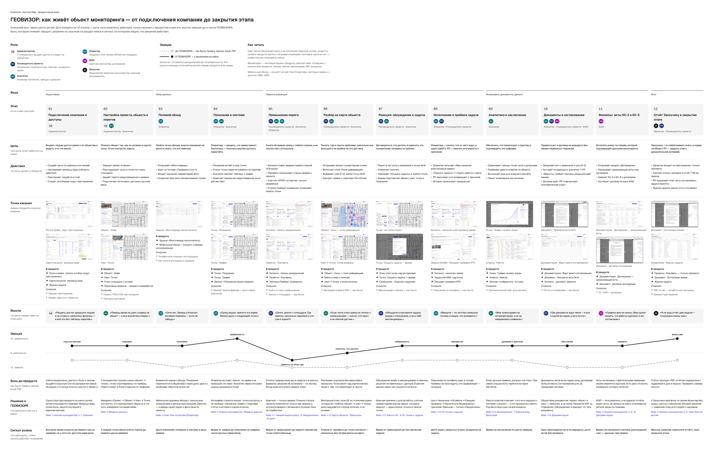
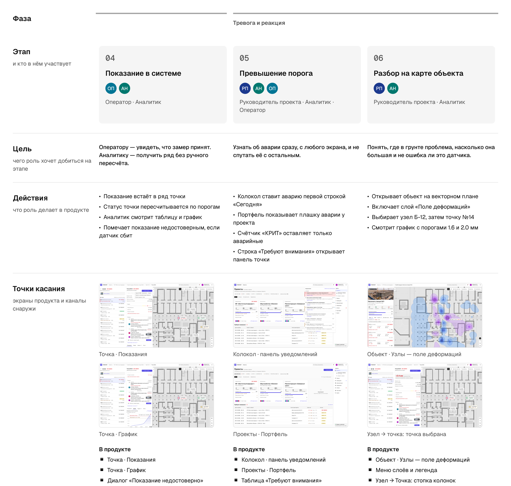
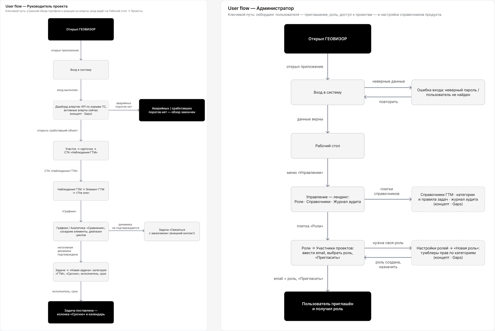
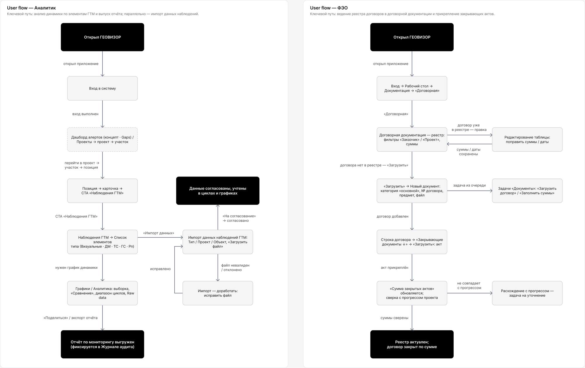
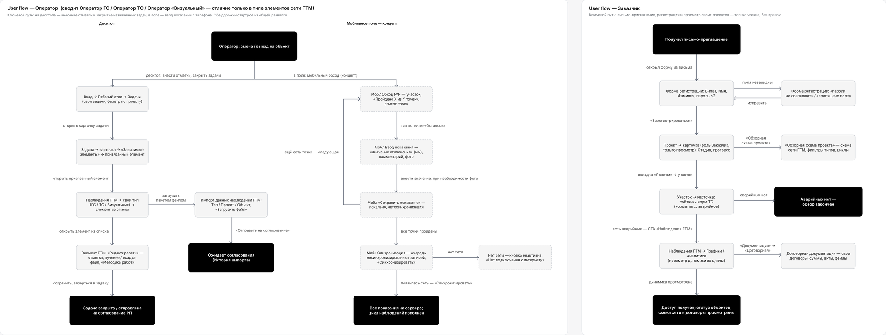

User flow показывает путь одной роли. CJM складывает их в одну историю объекта мониторинга — от подключения компании до отчёта заказчику. Так видно, где одна роль передаёт работу другой и где эта передача раньше шла через звонок, мессенджер или PDF.
Как читать. CJM построена по исследованию ролей и разбору процессов, а не по интервью. «Мысли» — формулировки команды, а не цитаты респондентов. Кривые эмоций «до» и «в ГЕОВИЗОРЕ» — гипотеза команды, её проверит тест с пользователями. «Сигнал успеха» — что наблюдать после запуска, цифр в нём нет намеренно.
Customer Journey Map
12 этапов в пяти фазах, 52 точки касания: 35 в продукте и 17 снаружи. Для каждого этапа записаны цель роли, действия, точки касания, мысли, эмоции, боль до продукта, решение в ГЕОВИЗОРЕ и сигнал успеха.

| № | Этап | Роли | Боль до продукта | Решение в ГЕОВИЗОРЕ | Сигнал успеха |
|---|---|---|---|---|---|
| 01 | Подключение компании и доступы | Администратор | Доступ к Excel и папкам выдаётся вручную или не разграничен | Одна структура на шесть ролей, матрица прав, роль по шаблону | Все роли вошли до первого цикла замеров, ни у кого нет доступа шире роли |
| 02 | Настройка проекта, объекта и порогов | Администратор, Аналитик | Плоская сцена «объект → точка», пороги живут в Excel отдельно от графиков | Иерархия «Проект → Объект → Узел → Точка», разведённая по нормативам | У каждой точки есть пороги до первого цикла замеров |
| 03 | Полевой обход | Оператор | Бумажный журнал, перенос через день-два, обратной связи нет | «Моя очередь» на десктопе; мобильный обход с офлайн-режимом — концепт | Доля показаний, попавших в систему в день замера |
| 04 | Показание в системе | Оператор, Аналитик | Оператор не знает, принят ли замер. Аналитику приходит сырой файл | Показание встаёт в ряд точки, статус пересчитывается по порогам | Время от замера до появления на графике |
| 05 | Превышение порога | РП, Аналитик, Оператор | Отчёты раз в неделю, решение по звонку. Когда красного много, авария тонет | Красный — только авария; колокол ставит аварию первой строкой | Время от превышения до первого просмотра ответственным |
| 06 | Разбор на карте объекта | РП, Аналитик | Растровая подложка без масштаба, точки не связаны с грунтом | Векторный план, поле деформаций со ступенями на порогах, колонки «объект → узел → точка» | Клики от портфеля до точки — несколько, без потери места |
| 07 | Реакция: обсуждение и задача | РП, Аналитик | Обсуждение в мессенджерах и звонках, не привязано к данным | Чат узла над вкладками, задача по точке одной кнопкой | Время от превышения до поставленной задачи |
| 08 | Исполнение и приёмка | Оператор, РП | Поручение по телефону, срок в голове | Цикл задачи до приёмки, возврат с причиной, история | Доля задач, закрытых в срок; возвраты на задачу |
| 09 | Аналитика и заключение | Аналитик | Excel, ручные графики, допуск «на глаз» | График с порогами, реестр алертов, экспорт | Время на заключение по циклу замеров |
| 10 | Документы и согласование | Аналитик, РП, ФЭО | Документы только во вкладке узла, согласование вне системы | Общая база, просмотр PDF, маршрут согласования | Срок прохождения акта по маршруту |
| 11 | Финансы: акты КС-2 и КС-3 | ФЭО | Акты не связаны с замерами, сверка вручную | Договорный раздел, акты под договором, шаг ФЭО в маршруте | Время согласования платежа, расхождения при сверке |
| 12 | Отчёт Заказчику и закрытие этапа | Заказчик, РП | PDF-отчёт через дни или недели | Доступ Заказчика «только просмотр», журнал аудита | Меньше запросов «пришлите отчёт» |

Что показала карта
- Самая глубокая яма — этап 05, превышение порога. Именно здесь раньше включался звонок. Весь путь 05–08 мы проектировали как один непрерывный сценарий, и он стал сценарием «авария» в прототипе.
- Передачи между ролями — самые хрупкие места. Замер → аналитик, задача → приёмка, акт → ФЭО. В каждом таком месте продукт возвращает статус тому, кто передал работу.
- 17 точек снаружи — это не провал: звонок и мессенджер никуда не денутся. Задача продукта — чтобы решение и его след оставались внутри.
User flow по ролям
Для каждой роли — свой флоу: главный путь по вертикали, ветки справа, 6–14 шагов на роль. У Оператора две дорожки, мобильный обход и десктоп, с общей развилкой.



| Роль | Главный путь |
|---|---|
| Руководитель проекта | Портфель → «Требуют внимания» → объект → узел → точка → задача → приёмка работы |
| Администратор | Роли и права → роль по шаблону → матрица прав → приглашение → журнал аудита |
| Аналитик | Алерты → точка → график с порогами → заключение → шаг согласования акта |
| Оператор | Колокол → задача → «Принять задачу» → замер и фото → «Сдать работу» → статус |
| ФЭО | Документация → «Ждут моего согласования» → договор и акты → согласовать или вернуть |
| Заказчик | Проекты → свой объект, «только просмотр» → согласованные документы и отчёты |
Из флоу — в прототип
Два пути из CJM стали сквозными сценариями рабочего прототипа, на которых мы проверяли интерфейс:
- «Авария» (этапы 05–07): Оператор видит аварию в портфеле и доходит до задачи по точке — 12 шагов.
- «Жизнь задачи» (этап 08): исполнитель принимает и сдаёт задачу, руководитель возвращает её с причиной, исполнитель пересдаёт, руководитель принимает — 16 шагов, две роли.
Результаты — в документе Юзабилити-проверка прототипа.